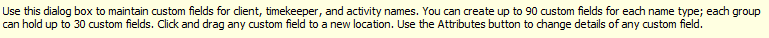
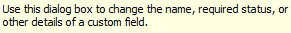
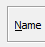
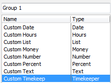

from sikuli import* import TABFunction def create_custom_field(): type('p', KeyModifier.ALT) type('c') wait(, 30) #----date type-----# type('n', KeyModifier.ALT) type('d') wait() paste('Custom Date') wait(1) type(Key.ENTER) waitVanish() #-----hours type--------# type('n', KeyModifier.ALT) type('h') wait() paste('Custom Hours') wait(1) type(Key.ENTER) waitVanish() #-----List type---------# type('n', KeyModifier.ALT) type('l') wait() paste('Custom List') wait(1) type('n', KeyModifier.ALT) onAppear(, paste('List Item')) type(Key.ENTER) waitVanish() type(Key.ENTER) waitVanish() #-----money type--------# type('n', KeyModifier.ALT) type('m') wait() paste('Custom Money') wait(1) type(Key.ENTER) waitVanish() #-----number------------# type('n', KeyModifier.ALT) type('n') wait() paste('Custom Number') wait(1) type(Key.ENTER) waitVanish() #-----percent-----------# type('n', KeyModifier.ALT) type('p') wait() paste('Custom Percent') wait(1) type(Key.ENTER) waitVanish() #-----text--------------# type('n', KeyModifier.ALT) type('t' + Key.ENTER) wait() paste('Custom Text') wait(1) type(Key.ENTER) waitVanish() #-----timekeeper--------# type('n', KeyModifier.ALT) type('tt' + Key.ENTER) wait() paste('Custom Timekeep') wait(1) type(Key.ENTER) waitVanish() #------Assert changes exists---------# assert exists(Pattern().similar(0.88)) keyDown(Key.SHIFT) type(Key.TAB) keyUp(Key.SHIFT) type(Key.ENTER) waitVanish() #create_custom_field()